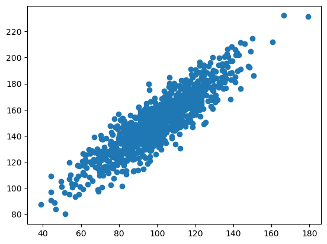

Correlation is the mathematical statistic for a population that provides us with a measurement of the strength of a linear relationship between two variables.
What is the correlation coefficient (Pearson's correlation)?
The correlation coefficient is a measure of the strength of a linear relationship between two variables. It tells us how closely two variables move together, but it does not explain why this movement occurs. Correlation analysis assumes that both variables being analyzed are independent variables, meaning that neither one causes the movement in the other. The correlation coefficient is denoted by the symbol ρ (pronounced rho) for a population and by the symbol r for a sample (Holmes, et. al., 2017). The correlation coefficient can be in the range of [-1, 1]:
A correlation coefficient of -1 indicates a perfect negative linear relationship, where as one variable increases, the other decreases linearly.
A correlation coefficient of 0 indicates no linear relationship, meaning that the two variables do not move together in a linear manner.
A correlation coefficient of 1 indicates a perfect positive linear relationship, where as one variable increases, the other also increases linearly.
The following snipet of code shows how to plot Pearson's correlation coefficient using python. It was taken from this jupyter notebook in Unit 3
(University of Essex Online, 2022).
from scipy.stats import pearsonr from matplotlib import pyplot as plt
# plot
plt.scatter(data1, data2)
plt.show()
# Pearsons correlation: 0.888 Code to calculate Pearson's correlation coefficient. Code taken from this jupyter notebook in Unit 3.

Correlation of two variables (University of Essex Online, 2022).
What is regression?
Regression is a statistical analysis technique used to find the relationship between an independent variable and one or more dependent variables (Montgomery, et. al., 2012).
In regression analysis, a regression model is built to estimate the parameters that describe the relationship between the variables.